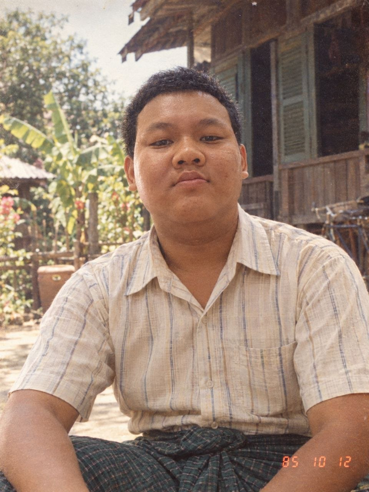

Interfaces
HTML · CSS · JavaScript
React · TypeScript · Next.js
LEARNING THROUGH PROJECTSI’m Lian Sian Thang — exploring the space between useful software and imaginative worlds, one project at a time.
Explore my work ↘
From a church library to a Myanmar-inspired game world, I like turning a specific idea into something people can actually use.
My projects explore business education, community software, data tools, and game development. I’m learning how to connect clear interfaces with the systems behind them — and how to keep improving through practice.
Follow the work on GitHub ↗Technologies I’m exploring across my current projects.
HTML · CSS · JavaScript
React · TypeScript · Next.js
LEARNING THROUGH PROJECTSPython · FastAPI · NestJS
PostgreSQL · SQLite · Supabase
LEARNING THROUGH PROJECTSUnity · Game prototyping
Flutter · Tauri · Git
EXPLORING & EXPERIMENTINGGames, web apps, and experiments.
Explore the projects online.
Talk projects, share feedback, or say hello.
09420534180 ↗GitHub ↗Prefer a direct conversation? Give me a call. This form is a frontend demo.